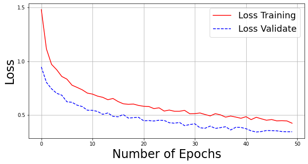
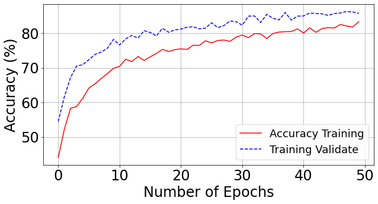

This project involves developing a deep learning model to predict poverty levels in Bolivia based on satellite images. The project uses multiple scripts to train and evaluate the model, including a ResNet-50 architecture for image classification. You can find the full code here
.The model is trained on satellite imagery using the ResNet-50 architecture, which has been pre-trained on the ImageNet dataset. Training and validation datasets are processed with data augmentation techniques to improve model robustness.
width_shape = 224
height_shape = 224
train_datagen = ImageDataGenerator(
rotation_range=20,
zoom_range=0.2,
width_shift_range=0.1,
height_shift_range=0.1,
horizontal_flip=True,
vertical_flip=True,
preprocessing_function=preprocess_input)
Data augmentation techniques, such as rotation, zoom, and flipping, are applied to the training and validation datasets to help the model generalize better to unseen images.
valid_datagen = ImageDataGenerator(
rotation_range=20,
zoom_range=0.2,
width_shift_range=0.1,
height_shift_range=0.1,
horizontal_flip=True,
vertical_flip=True,
preprocessing_function=preprocess_input)
Both the training and validation datasets are fed into the model using generators, which load batches of images and apply the transformations in real-time.
train_generator = train_datagen.flow_from_directory(
train_dir,
target_size=(width_shape, height_shape),
batch_size=batch_size,
class_mode='categorical')
validation_generator = valid_datagen.flow_from_directory(
validation_dir,
target_size=(width_shape, height_shape),
batch_size=batch_size,
class_mode='categorical')
The ResNet-50 model is trained on the augmented dataset for 70 epochs with a batch size of 64. The training process also includes validation at each epoch to monitor the model's performance on unseen data.
The first graph below illustrates the loss during training and validation over the course of 70 epochs. We can observe that the model's training loss (in red) decreases steadily, while the validation loss (in blue) also follows a downward trend, showing that the model is generalizing well.
The second graph shows the accuracy trend during the training process. The red line represents training accuracy, and the blue line shows validation accuracy. Both lines indicate that the model is improving over time, though the validation accuracy fluctuates a little more, suggesting some variance in generalization.

m_Resnet50 = ResNet50(input_tensor=image_input, include_top=False, weights='imagenet')
epochs = 70
model_history = custom_model.fit_generator(
train_generator,
epochs=epochs,
validation_data=validation_generator,
steps_per_epoch=nb_train_samples//batch_size,
validation_steps=nb_validation_samples//batch_size)
Once trained, the model is used to predict the poverty category of the input satellite images. The Predicccion_y_evaluacion script generates predictions and evaluates the model performance using a confusion matrix.
The Visualize_filters script (currently in progress) loads the trained model and visualizes how the image changes as it passes through the layers of ResNet. This helps in understanding what features the model is learning at different stages.